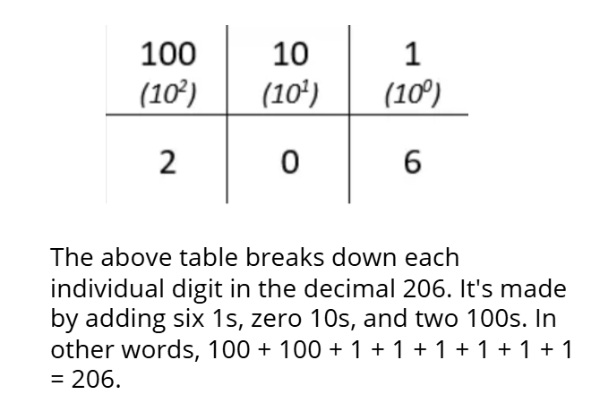
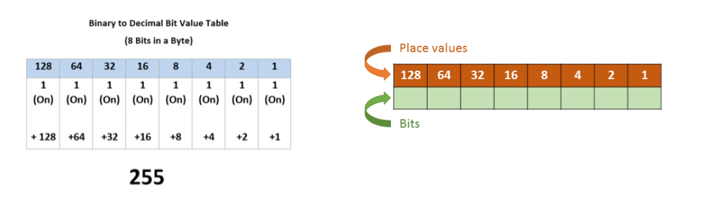

| Term | Definition |
|---|---|
| Bit | The smallest unit of digital information. Each individual one and zero in a binary sequence is a bit. |
| Byte | Eight bits together form a byte. The value of a single byte can range from 0 (eight 0s) to 255 (eight 1s). (4 bytes is called a nibble) |
| Kilobyte (KB) | One kilobyte is equal to 1,000 bytes. |
| Megabyte (MB) | One megabyte is one million bytes of information. Therefore, 1 megabyte equals 1,000 kilobytes. |
| Gigabyte (GB) | One gigabyte is one billion bytes. Therefore, 1 gigabyte equals 1,000 megabytes. |
| Terabyte (TB) | One terabyte is equal to 1,000 gigabytes. |
| Digital data | A physical signal, such as text, numbers, graphics, or sound, interpreted by converting it into binary numbers. |
| Encoding integers | Integers can have a positive or negative value. Computers encode 32 bit by using the first bit for the sign, one for negative and zero for positive. Then, the remaining 31 bits are used to encode the number itself, giving a range from about negative 2 billion to positive 2 billion. |
| Encoding Text | Computers represent text by using 1s and 0s as stand-ins for physical signals, such as magnetic or electrical charge. The computer can encode text by assigning a unique binary code to each character. |
| Processing Speed | In 64-bit processors, computers can receive or send eight bytes of data at once. Each time the processor writes data to memory or reads data from memory is called a cycle. The base unit of measure is hertz (Hz). One hertz means one cycle per second. 1 megahertz (MHz) = 1 million Hz (Often seen on an older PC bus interfaces.) 1 gigahertz (GHz) = 1 billion Hz (Often used with fiber optic networks. Newer computer CPUs run at gigahertz speeds.) |
| Storage space | Data storage usually refers to the number of bytes. Since bits and bytes are so small and can't store much information, we use the metric system to describe them in groups. |
| Throughput | Throughput, or data transmission from one computer to another, usually refers to the number of individual bits that can be transmitted in one second. For example, a gigabit internet connection can send a billion ones and zeroes every second. Throughput is also associated with PC bus speeds, or in other words, how quickly the system bus can move data from one computer component to the other. |
When we count things, we use ten digits, zero through nine. This system of ten digits is called the decimal system. However, there are two other systems used to express numbers that are used by computers: binary and hexadecimal. Don't worry if these number systems are a little overwhelming. The most important thing is to know that binary represents physical signals inside the computer and hex is an easy way for humans to represent binary numbers.
When you count in decimal, you start at zero, then go through each digit all the way to nine. Once you get to nine, you put a one in front of the next zero to get the number ten. This pattern continues for the tens place, incrementing the number in front of the zero to get 10, 20, 30, etc.
Once you get to nine tens and nine ones, you change them both to zero and add one to get a hundred. The decimal number 206 is made of two 100s, zero 10s, and six 1s. The ones place can be expressed as ten to the zero power. Tens are ten to the first power, and hundreds are ten to the second.
The binary number system is a base 2 system and works in the same basic way as the decimal numbering system but uses only the two values of 0 and 1. This works well since computers use electronic signals to represent data: a 1 indicates on and a 0 indicates off. Every binary number contains these two digits (0 and 1), regardless of how small or large the number is.
The difference between decimal and binary is the value of each place holder or position. As you just learned, in decimal you have the 1's position, then the 10's position, the 100's positions, etc.
To understand what a binary number is in decimal, you use the same principal, but each position has a different value. In binary, the decimal equivalent for the first position is 1. The next position is 2, and the next position is 4, followed by 8, and so on. Each subsequent position doubles in decimal value. This happens because binary uses a base 2 system.
This is easier to see if you use a table. Since computer data is often represented in 8-bit increments, or 1 byte, we'll use a table with eight place holders.
To count in binary, you start by placing a 1 in the first position which equals 1 in decimal. Since 1 is the highest number in binary, if you want to move to a decimal 2, you put a 1 in the second position and replace the first position with a zero, just as you do in decimal counting.
This same principal continues until you have reached the value of 255, the total of all the 1's in each of the eight positions.
To go to the next value of three, you put a 1 in the first position, which leaves you with a binary value of 11 or a 3 in decimal. The reason the value is 3, and not eleven, is because to convert a binary number to a decimal number, you add the decimal value of all the positions that contain a binary 1. So, 2 + 1 = 3.
As a last example, let's convert the binary number of 11001110 to a decimal number. As you can see in the following table, to do the conversion, all you need to do is add the decimal value for each binary position containing a 1 to get your answer. So, 128 + 64 + 8 + 4 + 2 = 206.
The hexadecimal system is used, in part, because it translates well to binary. Since binary numbers can get very large, using a hex number takes fewer digits. For example, 1111 in binary - four digits - can be reduced to just one hex digit - F.
Since there are only 16 options (0-15) for each place holder or position, to count higher than 15 (or F in hex), you replace the first digit of F with a 0 and then in the second position, add a 1, which leaves you with the hex value of 10. This means that 10 in hex is equal to 16 in decimal.
You continue to count in hex as follows (hex to decimal): 11=17, 12=18, 13=19, 14=20, 15=21, up to 19=25. To go to 26 in decimal, you use A-F, so you replace the hex 9 with A or 1A=26, 1B=27, up to 1F=31. Since you have reached the highest value in the first position again, for the next number, you change the first position to a 0 and increment the second position by one. Therefore, the hex value of 20 equals 32 in decimal. This process continues for as high as you want to count.
| Decimal | Binary | Hexadecimal |
|---|---|---|
| 0 | 0000 | 0 |
| 1 | 0001 | 1 |
| 2 | 0010 | 2 |
| 3 | 0011 | 3 |
| 4 | 0100 | 4 |
| 5 | 0101 | 5 |
| 6 | 0110 | 6 |
| 7 | 0111 | 7 |
| 8 | 1000 | 8 |
| 9 | 1001 | 9 |
| 10 | 1010 | A |
| 11 | 1011 | B |
| 12 | 1100 | C |
| 13 | 1101 | D |
| 14 | 1110 | E |
| 15 | 1111 | F |
HEX TO DECIMAL
The conversion of binary to hex uses the same process of converting binary to decimal but you work with only four bits at a time. Once you have the decimal value, you convert that decimal value to a hex value. The reason you work with only four bits is because the highest value of four bits in binary is equal to F in hex (1111=F). For example, look at a binary value of 1101. As you can see in the following table, the decimal value of this binary number is 13, but we know that in hex, the decimal value of 13 is D.
HEX TO BINARY
In the following example, you see that we took the really long binary number of 1101001010100013 and broke it up into four-bit chunks: 1101 - 0010 - 1010 - 0011. After converting each chunk to a decimal value, we then converted those numbers to hex. Since 2 and 3 are the same in both decimal and hex, no conversion to hex was required.
If the embed doesnt work, use the button instead.